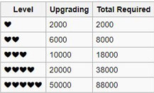

Image Source
{kind=link}
Back to Repository Index
CurrencyCopperStardustJadeOutfit VouchersPremium RollsBondBond AscensionCharacter-specific bond materialIchihimeMiki NikaidouKeikumusumeKana FujitaChiori MikamiMai AiharaNadeshikoYui YagiRiu KujouXeniaKaaviSaraHana NinomiyaNana ShiraishiHinata TakanashiNatsuki ShinomiyaWanjirouSora IchinoseHideki AkechiHaruna IgarashiAnju SuzumiyaJosephOsamu Saitou
Currency
There are currently four types of currency:
Copper
Earned by:
- Coming in 1st or 2nd place while in ranked SILVER ROOM or higher. You earn more copper the higher your score
- Completing dailies
- Events
- Directly purchased with Jade (5000 coppers per 10 jade)
Used for:
- Purchasing Orbs. (Orbs can also drop from SILVER+ rooms chests)
- Ante for entering SILVER+ rooms, click the
 icon to see details
icon to see details - Purchasing GREEN/BLUE gifts
For F2P Players: Copper should be saved for Ante and later purchasing orbs, it is not worth buying gifts.
Stardust
Earned by:
Donating gifts

- GREEN gifts - 1 stardust
- BLUE gifts - 5 stardusts
- PURPLE gifts - 25 stardusts
Note: Gifts that have a
icon cannot be donated.
Used for:
- Buying Summon Scrolls (Premium rolls). Up to 5 per month.

- Buying purple gifts
- Bond ascension
For F2P Players: Stardust is how you get premium rolls without paying money. Prioritize Summon Scrolls.
Jade
Earned by:
- Bought with REAL MONEY? $$$
- Exchanged from Outfit Vouchers
Used for:
- Buying premium rolls
- Buying copper
- Renaming your account
JADE IS THE WHALE CURRENCY. Recently, there's been a ton of confusion of the different kinds of Jade (premium/free jade), and with the addition of the mobile version's jades being separate from the web version, it has only gotten worse. Don't worry about it if you aren't going to whale in the first place.
THERE IS CURRENTLY NO WAY FOR F2P PLAYERS TO EARN JADE!
Outfit Vouchers
Earned by:
- Bought with REAL MONEY $$$
Used for:
- Buying outfits
- Buying 10 jade
This was a currency created to buy costumes during the Holloween Event, but they're (probably) going to be used for all outfits going forward, otherwise it would make no sense to create an entire new currency.
For F2P Players: Treat this like jade as well.
New f2p players should prioritize getting to Adept Rank to play in the SILVER Rooms. Then proceed to donate the gifts they win to buy Summon Scrolls. Copper should be saved for Ante.
Premium Rolls
Once you have saved 50 stardusts, you can buy a Summon Scroll for a premium roll. Each roll gives you one faith.

The rate are as follows:
- 80% chance to get a gift (GREEN/BLUE/PURPLE)
- 15% chance to get a decoration
- 5% chance to get a character
Note:
10-rolls only give a guaranteed PURPLE gift with paid jade. There's no use saving up for it.Apparently 10-rolls give out a guaranteed PURPLE gift even with charm (or free?) jade, according to anons in the thread.
Bond

Bond is represented by the hearts on a character in the dormitory. Leveling up bond grants you various cosmetic features, most notably:
- At Level 5, your character will read off any han multipliers when you win a hand.
- At Level 5, you can perform a bond ascension which unlocks your character's alternate costume and the last 3 emotes.
Bond can be acquired the following ways:
Giving gifts. GREEN 200 / BLUE 1000 / PURPLE 5000
- A character's preferred gift (see their bio) grants 50% extra bond
Playing in SILVER rooms or higher (you gain bond even for 3rd/4th place)
Bond Ascension
Bond Ascension can only be done at Level 5 Bond
ALL characters require:
- 100 Stardusts
- 10 Wishing Stones (1 Faith each)

Each character also requires:
- 10 of 2 kinds of Orbs (20 total). SILVER+ rooms can drop Orbs
- 5 specific purple gifts
Character-specific bond material
Along with 100 stardusts and 10 wishing stones, you will need to gather these specific Orbs and a PURPLE gift.
Ichihime

 Sphere of Hope x 10
Sphere of Hope x 10 Sphere of Innocence x 10
Sphere of Innocence x 10 Delicious Cookie x 5
Delicious Cookie x 5
Miki Nikaidou

 Sphere of Love x 10
Sphere of Love x 10 Sphere of Wisdom x 10
Sphere of Wisdom x 10 Heart of the Ocean x 5
Heart of the Ocean x 5
Keikumusume

 Sphere of Honesty x 10
Sphere of Honesty x 10- Sphere of Wisdom x 10
- Sphere of Courage x 10
- Sphere of Hope x 10
 Light Novel x 10
Light Novel x 10
Kana Fujita

- Sphere of Courage x 10
- Sphere of Hope x 10
 Classic Painting x 5
Classic Painting x 5
Chiori Mikami

- Sphere of Honesty x 10
- Sphere of Innocence x 10
 Teddy Bear XXL x 5
Teddy Bear XXL x 5
Mai Aihara

 Sphere of Will x 10
Sphere of Will x 10 Sphere of Light x 10
Sphere of Light x 10 Delicate Fanzine x 5
Delicate Fanzine x 5
Nadeshiko

- Sphere of Courage x 10
- Sphere of Honesty x 10
- Valuable Goblet x 5
Yui Yagi

- Sphere of Will x 10
- Sphere of Wisdom x 10
- Delicious Cookie x 5
Riu Kujou

- Sphere of Love x 10
- Sphere of Light x 10
 Gorgeous Dress x 5
Gorgeous Dress x 5
Xenia

- Sphere of Courage x 10
- Sphere of Will x 10
 Powerful Console x 5
Powerful Console x 5
Kaavi

- Sphere of Honesty x 10
- Sphere of Wisdom x 10
- Heart of the Ocean x 5
Sara

- Sphere of Love x 10
- Sphere of Will x 10
- Gorgeous Dress x 5
Hana Ninomiya

- Sphere of Innocence x 10
- Sphere of Light x 10
- Delicate Fanzine x 5
Nana Shiraishi

- Sphere of Courage x 10
- Sphere of Light x 10
- Delicate Fanzine x 5
Hinata Takanashi

- Sphere of Innocence x 10
- Sphere of Hope x 10
- Teddy Bear XXL x 5
Natsuki Shinomiya
- Sphere of Courage x 10
- Sphere of Honesty x 10
- Valuable Goblet x 5
Wanjirou

- Sphere of Wisdom x 10
- Sphere of Hope x 10
- Delicious Cookie x 5
Sora Ichinose

- Sphere of Wisdom x 10
- Sphere of Innocence x 10
- Powerful Console x 5
Hideki Akechi

- Sphere of Love x 10
- Sphere of Light x 10
- Classic Painting x 5
Haruna Igarashi

- Sphere of Love x 10
- Sphere of Hope x 10
- Powerful Console x 5
Anju Suzumiya

- Sphere of Innocence x 10
- Sphere of Light x 10
- Classic Painting x 5
Joseph

- Sphere of Courage x 10
- Sphere of Honesty x 10
- Valuable Goblet x 5
Osamu Saitou

- Sphere of Will x 10
- Sphere of Wisdom x 10
- Heart of the Ocean x 5